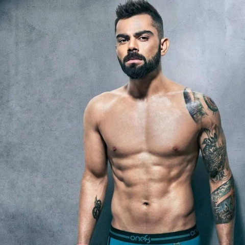
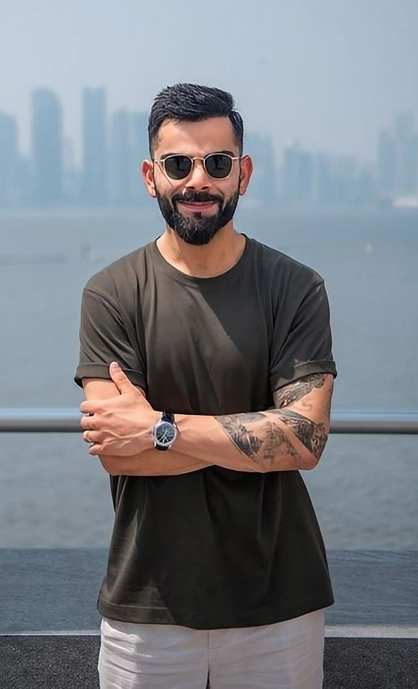

Virat Kohli is an Indian international cricketer who is widely regarded as one of the best batsmen in the world.
Virat Kohli is an Indian international cricketer who is widely regarded as one of the best batsmen in the world.Records of Virat Kohli:
About Virat Kohli's Fitness:

Virat Kohli is well-known for his commitment to fitness, and he has often spoken about the importance of maintaining a high level of physical fitness in cricket.
His dedication to fitness has contributed to his success on the field and his ability to perform consistently across all formats of the game.
His performance in all formats is given by:
| Perspective | Test | ODI | T20I | |
|---|---|---|---|---|
| Matches | 111 | 292 | 115 | |
| 50s/100s | 29/29 | 72/50 | 37/1 | |
| Runs | 8676 | 13848 | 4008 | |
| Highest | 254 | 183 | 122 |
About his Tattoos:
One of Virat Kohli's prominent tattoos is a samurai warrior on his left forearm.
The tattoo also includes a dragon and "God's eye" tattoo on his left shoulder.
Virat Kohli has his parents names,"Saroj"(mother),Prem"(father)inked on his arms as a
tribute to them,many more tatoos on his body to depict modest fashion and confidence.

Marital Status:He married to Bollywood Actress,Anushka Sharma on December 11,2017.
His daughter name is Vamika.
WHY IS VIRAT KOHLI MANY ONE'S INSPIRATION?
About his Fashion:
The qualities Virat have that inspire youth,they are:
Virat Kohli is known for his sense of style and fashion.Over the years, Kohli has become a style icon,
and his fashion choices are closely followed by fans and the media.
He is often seen with a well-maintained beard,and hairstyles.
His formal looks often reflect a modern and contemporary aesthetic.
His fashion displays confidence and style..!
- Fitness and Work Ethic
- Consistency and Perseverance
- Handling Pressure
- Charitable Work
- Leadership Qualities
Conclusion~
*I Love Virat Kohli because he respects his fans,family,colleagues.
*His agression,commitment,dedication,passion,execution inspires me alot.
*The way how he speak in public in the losing cause motivates to be bold.
*And I Can proudly say iam a fanboy of Virat Kohli as a human being,a cricketer,a fitness expert
and even a social personality and many more.
Click below to visit his official IG handle